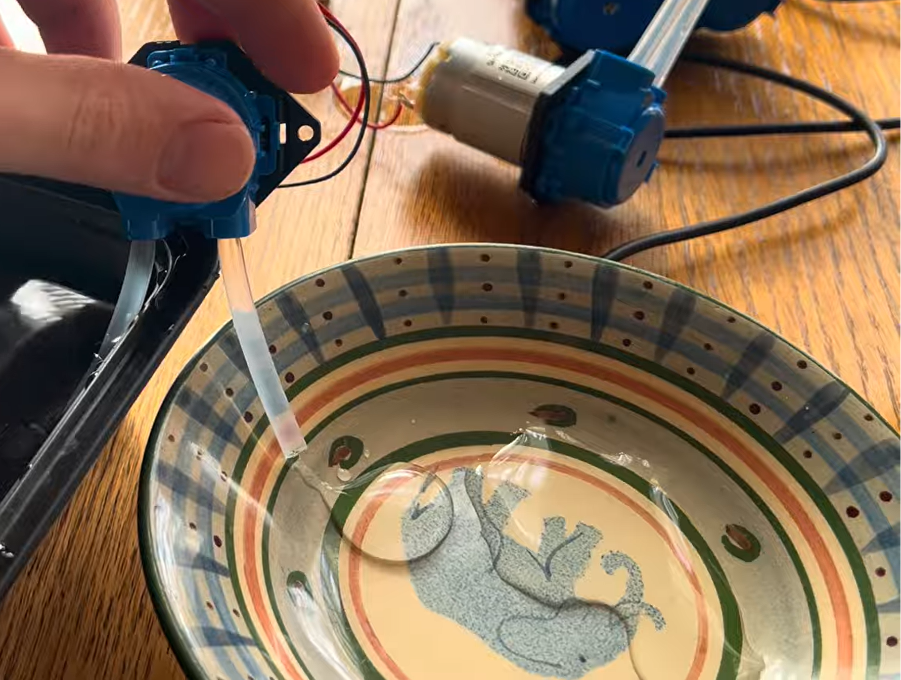

<div class="textcontainer">
<p class="margin"> </p>
<h3>Week 4: Microcontroller Programming</h3>
<div class="spacer"></div>
<h4>Computation Control with Paristaltic Pumps</h4>
<p class="margin"> </p>
 <img src="./pumpPulse.png" style="height:250px">
<p class="margin"> </p>
Continuing from last week's wiring of my peristaltic pumps, the focus this week was to get fine computational control over the pumps.
<p class="margin"> </p>
These pumps will be used to drip single drops of ink onto my paper marbling and should also be capable of emptying all the ink held within the pump's tubes back into the reservoir.
<p class="margin"> </p>
This means that my goals are to 1: be able to manually control each individual pump to push liquid forward or backward, and 2: trigger brief forward pulses to my pumps which equate to a single drop of liquid being released from the head.
<p class="margin"> </p>
All of this also needs to be controllable from my computer, not the microcontroller, as my commputer will house the interface for designing and generating paper marblings.
<p class="margin"> </p>
Here's what I came up with:
<p class="margin"> </p>
<iframe
width="1000"
height="600"
src="https://www.youtube.com/embed/CHpRYmVB-Ow?si=Ir7O6m9sdARzyqE6"
title="YouTube video player"
frameborder="0"
allow="accelerometer; autoplay; clipboard-write; encrypted-media; gyroscope; picture-in-picture; web-share"
referrerpolicy="strict-origin-when-cross-origin"
allowfullscreen>
</iframe>
<p class="margin"> </p>
Overall, this was a total success! I was able to get control from my computer of each pump individually, allowing for both forward and back pumping, as well as short pulses that push out a single drop of liquid!
<p class="margin"> </p>
I did, however, notice an error in my wiring. I am both controlling and powering the pumps from my microcontroller which isn't rated for such power demanding devices. It can run one, even two, without issue, but not all four at once, and honestly, it shouldn't even be running one.
<p class="margin"> </p>
This is a simple rewiring and I'm not concerned in the least, the only reason why I haven't done it already is that I am currently out of town and I didn't bring any spare components with me.
<p class="margin"> </p>
So, next steps is to correct the wiring so I have a seperate power supply for the four pumps and then extend my computational control of the pumps such that you control them through a GUI with a Python backend rather than by manually inputting bytecodes directly into the Serial Monitor. This, once again, is easy and will make controlling the pumps integratable with my paper marbling editor and make the whole system more user-friendly.
</div>